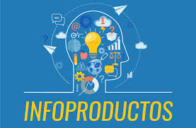

PRINCIPAL
B2B
B2C
B2E
C2C
B2G
C2G
ECOMMERCE DE PRODUCTOS DIGITALES
ECOMMERCE DE SERVICIOS
ECOMMERCE SOFTWARE AS A SERVICE (SAAS)
ECOMMERCE OPEN SOURCE
ECOMMERCE DE INFOPRODUCTOS
ECOMMERCE DE INFOPRODUCTOS
son una vía excelente para monetizar un negocio online,
pues la mayor inversión que debes hacer para ellos
es en tiempo, pero no tanto económica.
En otras palabras, se podría decir que una vez que
los comercialices empezarás a obtener beneficios
relativamente rápido (y así lo corroboran muchos
profesionales del sector).
Apostar por incluir infoproductos para tu eCommerce,
puede reportar muchos y grandes beneficios a tu
actividad digital.
Entre los más atractivos, como te decía, suele ser
el gran potencial para generar beneficios, pues
los negocios basados en la venta de infoproductos se
caracterizan por tener un ROI muy alto.
Dentro de los diferentes formatos de infoproductos que
puedes desarrollar, hay opciones diferentes que
debes considerar en base a tu tipo de negocio y tus
conocimientos. Lo que vale para uno, no
tiene por qué valer para otros.
